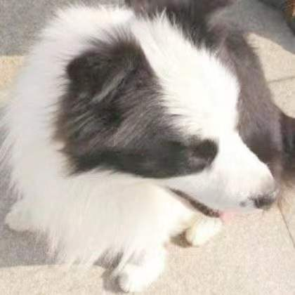

Haifan Gong龚海帆PhD Candicate Student
SRIBD, |
 |
I am currently a phd candicate at The Chinese University of Hong Kong, Shenzhen in CIE, supervised by Prof. Haofeng Li . Before that, I recive the Master degree from Computer Engineering, Sun Yat-sen University (SYSU), supervised by Prof. Guanbin Li in 2022. I received the B. Eng. degree from Computer Science and Technology, Nanchang University (NCU) in 2020.
My research interests include vision and language, medical imaging analysis, and bioinformatics, especially curriculum learning, multi-task learning, and prior knowledge enlightened network design.
[09/2023] One papers was accepted to Bioinformatics (JCR Q1, IF: 5.8, Top journal in bioinformatics)
[06/2023] Two papers were accepted to MICCAI 2023 with one early accepted (Top 14%)
[06/2023] One paper was accepted to Nature Communications (JCR Q1, IF: 16.6, Nature subjoural)
[11/2022] One paper was accepted to Computers in Biology and Medicine (JCR Q1, IF: 7.7)
[10/2022] One paper was accepted to Cell Reports Physical Science (JCR Q1, IF: 8.9, Cell subjoural)
[07/2022] One paper was accepted to ACM CSUR (JCR Q1, IF:16.6)
[06/2022] One paper was accepted to IEEE TMI (JCR Q1, IF:10.6, Top journal in medical imaging analysis)
[05/2022] One paper was early accepted to MICCAI 2022 with Student Travel Award (Top 4%)
[11/2021] Our paper won the Best Poster Prize at ICMR 2021
[05/2021] I have joined Shanghai AI Lab as a research intern
[05/2021] We won the first prize at ImageCLEF VQA-Med-2021 challenge [Full Text]
[04/2021] One paper was accepted to ICMR 2021
[01/2021] One paper was accepted to ISBI 2021
ASC: Appearance and Structure Consistency for Unsupervised Domain Adaptation in Fetal Brain MRI Segmentation
Zihang Xu*, Haifan Gong*, Xiang Wan and Haofeng Li.
Medical Image Computing and Computer Assisted Intervention (MICCAI), 2023
[Full Text]
[Code]
Visual-Attribute Prompt Learning for Progressive Mild Cognitive Impairment Prediction
Luoyao Kang*, Haifan Gong*, Xiang Wan and Haofeng Li.
Medical Image Computing and Computer Assisted Intervention (MICCAI), 2023
[Full Text]
[Code]
Less is More: Adaptive Curriculum Learning for Thyroid Nodule Diagnosis
Haifan Gong*, Hui Cheng*, Yifan Xie, Shuangyi Tan, Guanqi Chen, Fei Chen, Guanbin Li
Medical Image Computing and Computer Assisted Intervention (MICCAI), 2022
[Full Text]
[Code]
Cross-Modal Self-Attention with Multi-Task Pre-Training for Medical Visual Question Answering
Haifan Gong*, Guanqi Chen*, Yizhou Yu, Guanbin Li
ACM International Conference on Multimedia Retrieval (ICMR), 2021
[Full Text]
[Code]
[中译版(非官方)]
Multi-task Learning for Thyroid Nodule Segmentation with Thyroid Region Prior
Haifan Gong, Guanqi Chen, Ranran Wang, Xiang Xie, Mingzhi Mao, Yizhou Yu, Fei Chen, and Guanbin Li.
IEEE International Symposium on Biomedical Imaging (ISBI), 2021
[Full Text]
[Code]
Unbiased Curriculum Learning Enhanced Global-Local Graph Neural Network for Protein Thermodynamic Stability Prediction
Haifan Gong*, Yumeng Zhang*, Chenhe Dong, Yue Wang, Guanqi Chen, Bilin Liang, Haofeng Li, Lanxuan Liu, Jie Xu, Guanbin Li
Bioinformatics (Top journal in bioinformatics), 2023
[Full Text]
[Code]
Bile Acid-dependent Transcription Factors and Chromatin Accessibility Determine Regional Heterogeneity of Intestinal Antimicrobial Peptides
Yue Wang, Yanbo Yu, Lixiang Li, Mengqi Zheng, Jiawei Zhou, Haifan Gong, et al.
Nature Communications (Nature subjournal), 2023
[Full Text]
Thyroid Region Prior Guided Attention for Ultrasound Segmentation of Thyroid Nodules
Haifan Gong, Jiaxin Chen, Guanqi Chen, Haofeng Li, Guanbin Li and Fei Chen.
Computers in Biology and Medicine (Journal version of ISBI 2021), 2022
[Full Text]
[Code]
Understanding the Effectiveness of Enzyme Pre-reaction State by a Quantum-based Machine Learning Model
Shenggan Luo, Lanxuan Liu, Chu-Jun Lyu, Byuri Sim, Yihan Liu, Haifan Gong, Yao Nie, Yilei Zhao
Cell Reports Physical Science (Cell subjournal), 2022
[Full Text]
VQAMix: Conditional Triplet Mixup for Medical Visual Question Answering
Haifan Gong*, Guanqi Chen*, Mingzhi Mao, Zhen Li, Guanbin Li
IEEE Trans. on Medical Imaging (Top journal in medical image analysis), 2022
[Full Text]
[Code]
A Survey of Natural Language Generation
Chenhe Dong, Yinghui Li, Haifan Gong, Miaoxin Chen, Junxin Li, Ying Shen, Min Yang
ACM Computing Surveys (ACM CSUR), 2022
[Full Text]
[Official Full Text]